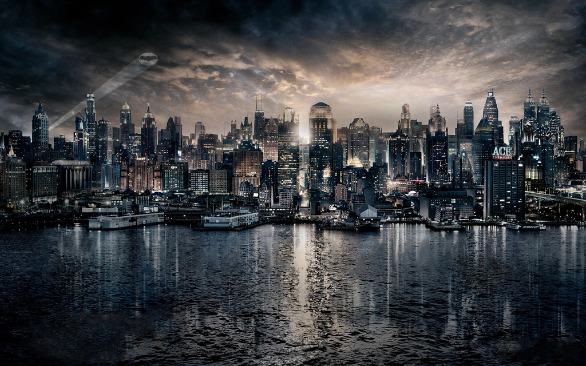
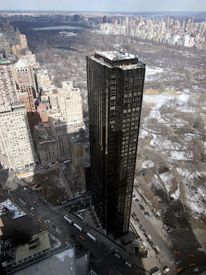

Bienvenidos a nuestra hermosa ciudad, donde la historia y la modernidad se encuentran en perfecta armonía.
Conocé los datos clave de nuestra ciudad

Sobre Ciudad Dadiuc
Una ciudad con mucha historia
Desde sus primeros días, Ciudad Dadiuc se destacó por su imponente arquitectura, sus grandes avenidas y su ubicación estratégica. Con el paso del tiempo, pequeños asentamientos fueron dando lugar a una enorme metrópolis, convirtiendo a la ciudad en uno de los principales centros urbanos del país.
Entre tradición y modernidad
Recorrer Ciudad Daciuc es descubrir una ciudad llena de contrastes. Sus antiguos edificios y barrios históricos conviven con enormes rascacielos, modernos centros comerciales y una intensa vida urbana. Por ejemplo, tenemos la Imponente Torre Errot un símbolo de la modernidad y el progreso positivo de la ciudad.

Cada calle tiene una historia que contar. Desde la zona portuaria hasta el centro de la ciudad, los visitantes pueden encontrar lugares únicos y disfrutar de una arquitectura que combina diferentes épocas.
¿Por qué visitar Ciudad Dadiuc?
Hoy, la ciudad invita a descubrir sus calles, conocer su historia y vivir una experiencia diferente. Su arquitectura, sus barrios, su vida nocturna y sus misterios hacen de Ciudad Dadiuc un destino único.
Ven a conocer una ciudad donde cada esquina tiene una historia y donde lo inesperado puede suceder en cualquier momento. Ciudad Dadiuc te espera.
Costumbres de Ciudad Dadiuc
Los habitantes de Ciudad Dadiuc mantienen diversas costumbres que forman parte de la identidad de la ciudad. Una de las más importantes es disfrutar de sus espacios culturales, recorrer sus barrios históricos y participar de las actividades nocturnas.
También es tradición reunirse en las plazas y espacios públicos durante los eventos de la ciudad, especialmente durante las celebraciones organizadas por la comunidad.
Barrios y zonas de Ciudad Dadiuc
Ciudad Dadiuc está formada por diferentes barrios y zonas, cada uno con una identidad propia. Entre los más conocidos se encuentran el centro de la ciudad, la zona portuaria y los barrios históricos.
- Centro de Ciudad Dadiuc: zona de grandes edificios, comercios y oficinas.
- Zona Portuaria: área cercana al puerto, reconocida por su actividad comercial.
- Barrios Históricos: sectores donde se conservan edificios y calles tradicionales.
Datos clave de Ciudad Dadiuc
- Ubicación
- Costa Oeste de Argentina.
- Fundación
- Ciudad Dadiuc fue fundada oficialmente por un comerciante europeo cerca de la década de 1830, aunque la zona ya estaba habitada por colonos europeos.
- Habitantes
- Se estima que entre 8 y 9 millones de habitantes viven y trabajan en la ciudad.
- Arquitectura
- Combina edificios históricos, rascacielos modernos y barrios tradicionales.
- Principal símbolo
- Ciudad Dadiuc es un monstruo de piedra y metal que te impresiona con solo mirarlo, donde el cielo casi no se ve porque los rascacielos neogóticos y las enormes estatuas Art Déco.
- Atractivos turísticos
- Los puntos de interés más atractivos son: El Jardín Botánico de Dadiuc, La estatua de Lady Dadiuc, El Museo de Antigüedades de Dadiuc, El Teatro de Dadiuc y La Torre Errot.